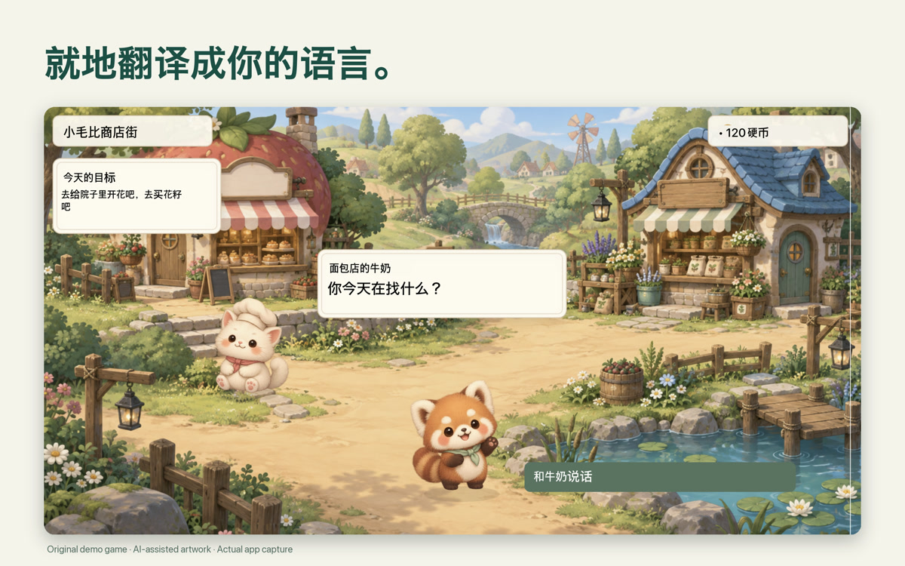
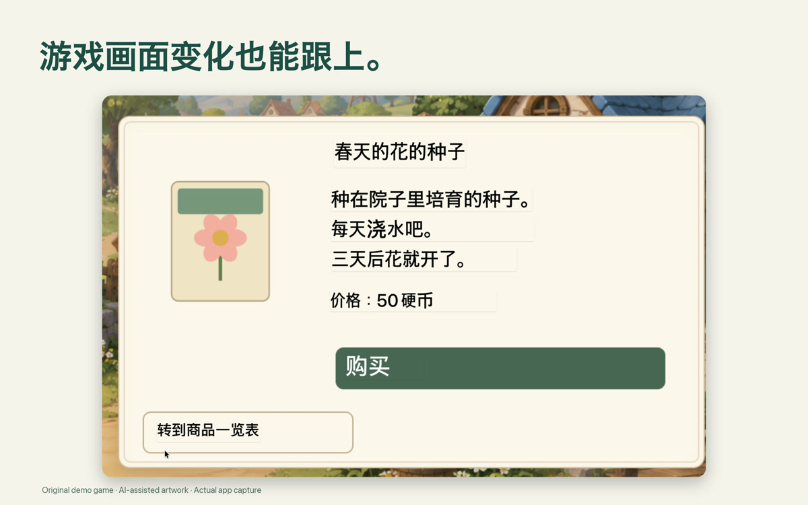
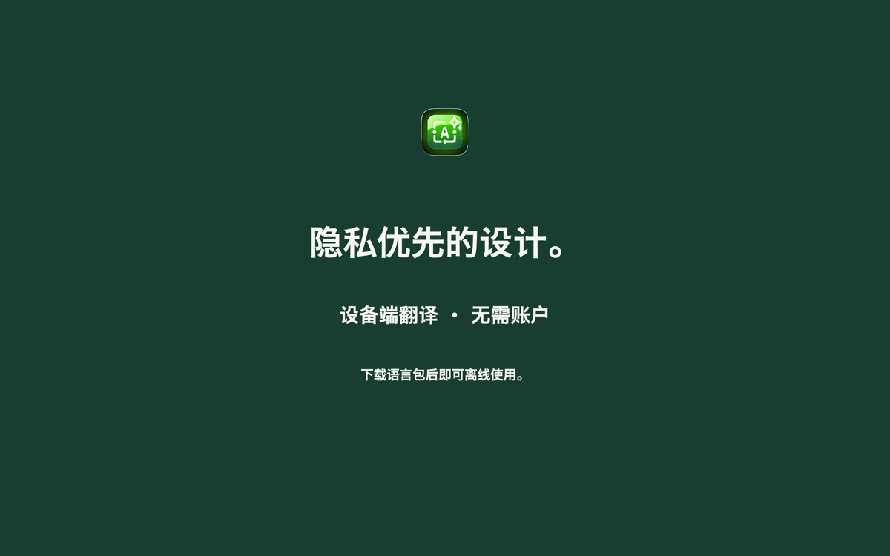

在原处阅读
直接在游戏画面上阅读翻译后的对话。
Mac 屏幕翻译
选择游戏、图片或文档中的文字，在原来的位置阅读翻译。
一次购买 · 无需订阅
请在 App Store 查看您所在地区的当前价格。
macOS 15+ · 支持 Apple 芯片与 Intel · 需要屏幕录制权限。下载语言包后即可离线使用。 设置与兼容性说明
框选想阅读的屏幕文字。
在原来的窗口上阅读翻译。
观看视频或玩游戏时，翻译变化的屏幕文字。

直接在游戏画面上阅读翻译后的对话。

在原来的位置阅读对话和屏幕文字。

设备端翻译，无需账户。下载语言包后即可离线使用。
ViewLingo 读取的是屏幕上看得见的文字，而不是语音。语言列表直接来自 macOS，语言包下载一次后即可离线翻译。
像在 Mac 上那样，在文章上拖出一个取景器。
此示例用于说明操作方式，不会运行实际翻译引擎。
ViewLingo 支持您的 Mac 上Apple 文字识别（OCR）和翻译共同支持的语言。可用语言取决于 macOS 版本。
ViewLingo 会引导你把每个语言包下载一次（也可以在系统设置 › 通用 › 语言与地区 › 翻译语言中管理）。之后翻译完全离线运行。
您的 Mac 上可用的确切列表可在 ViewLingo 设置中查看，应用会直接从 macOS 读取。
按下 fn + Control + Option，框选屏幕上的任何文字：游戏、视频、网页、文档或应用。移动或调整取景器，翻译随之更新。
紧跟视频字幕、游戏、幻灯片和直播中不断变化的文字；画面不变时，译文稳稳停留。
凡是 Mac 的文字识别与 Apple 翻译共同支持的语言都能使用，语言列表随 macOS 一起扩展。
无需将屏幕发送到服务器。翻译在您的 Mac 上本地处理。
译文直接覆盖在原文上，贴合原有的排版与配色。无需复制，也无需切换应用。
识别并翻译日语、中文、韩语的竖排文字，从漫画对白到街头招牌都不在话下。
翻译文本比原文长时自动调整字体大小，确保可读性。
Live、重试和关闭按钮位于选区外侧，绝不会遮住你正在阅读的文字。
您的内容不会离开您的Mac。所有翻译均通过Apple内置翻译引擎在设备上完成。
下载所需语言包后，无需联网即可在 Mac 上翻译。
无需账户，没有分析，没有跟踪。我们从不接收您的屏幕内容或译文，翻译记录只保存在您的 Mac 上。
使用设备内的 Apple 翻译引擎。可用语言取决于您的 Mac。
可在 Mac App Store 下载。
选择游戏、图片或文档中的文字，在原来的位置阅读翻译。
请在 App Store 查看您所在地区的当前价格。
macOS 15 或更高版本 · 支持 Apple 芯片与 Intel